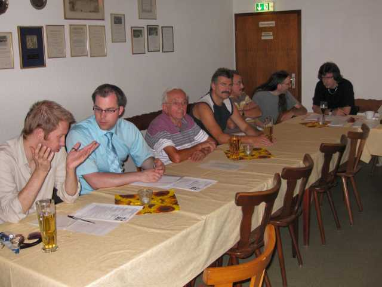
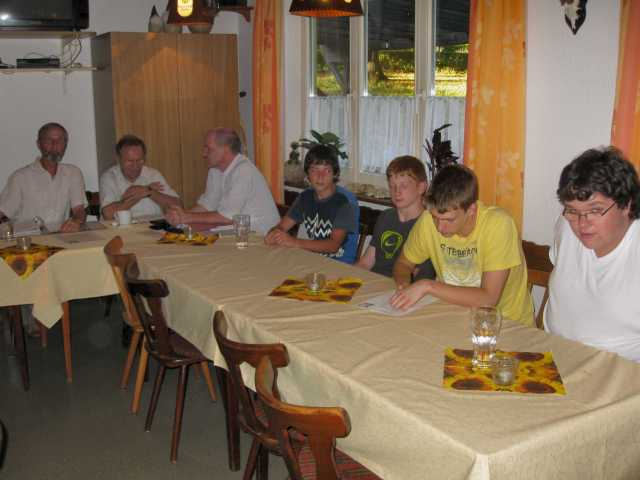
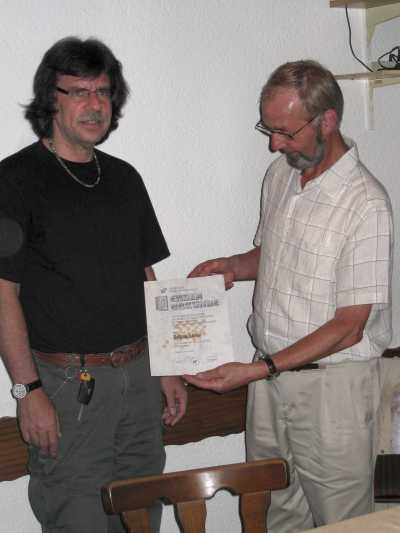
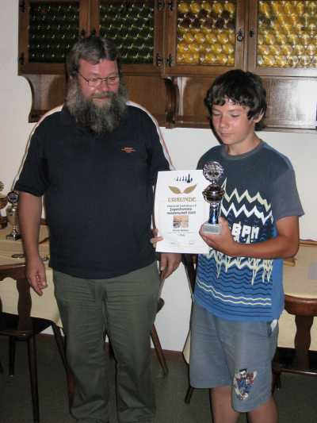
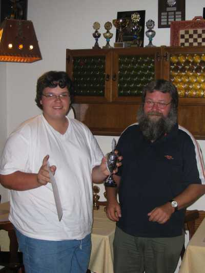
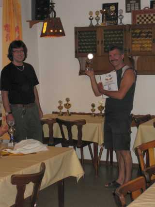
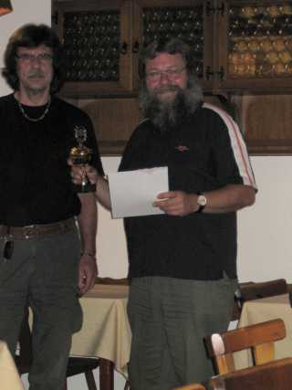
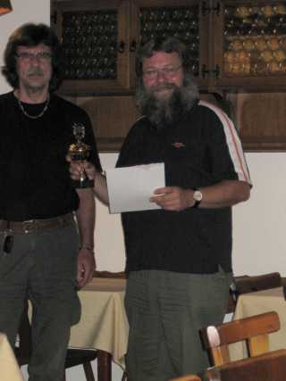
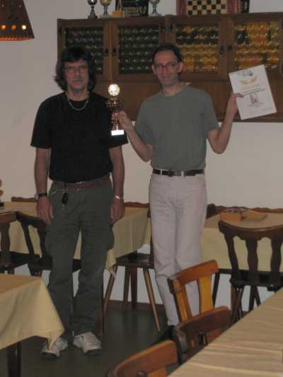

Bürgermeister Krieger (im Gespräch mit Pressevertreter Herrn Kerkhoff) war unserer Einladung gerne gefolgt.

Auch einige unserer Jugendspieler waren anwesend. Drei von ihnen durften ja auch schon mit abstimmen.

Bürgermeister Krieger war des Lobes voll und überreichte uns zu unserem 40-jährigen Jubiläum eine Zuwendung der Stadt Laufenburg in Höhe von 200 €.

Wolfgang Scheina erhielt die Treuenadel des Badischen Schachverbands für 25-jährige Verbandszugehörigkeit.
Jugendleiter Roland Bahner übernahm die Ehrungen für die Jugendvereinsmeisterschaft.

Daniel Bahner siegte in der Gruppe U16.

Tobias Oelschlegel wurde Sieger in der Gruppe U18.

Jochen Bahner erhielt einen Fairnesspokal für dieses Turnier.
Wolfgang Scheina verteilte anschließend Urkunden und Pokale für die Vereinsmeisterschaft.


In der Gruppe 2 belegte Holger Kutzsche (linkes Bild) den 3. Platz, Elmar Kohlhöfer (rechtes Bild) wurde Zweiter.

Jochen Bahner als stolzer Sieger der Gruppe 2.
 
Der 3. Platz in der Gruppe 1 ging an Wolfgang Scheine (linkes Bild). Zweiter in dieser Gruppe wurde Roland Bahner (rechtes Bild).

Strahlender Sieger der Gruppe 1 wurde Stefan Frommherz.